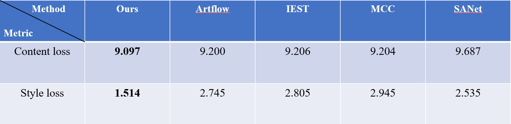
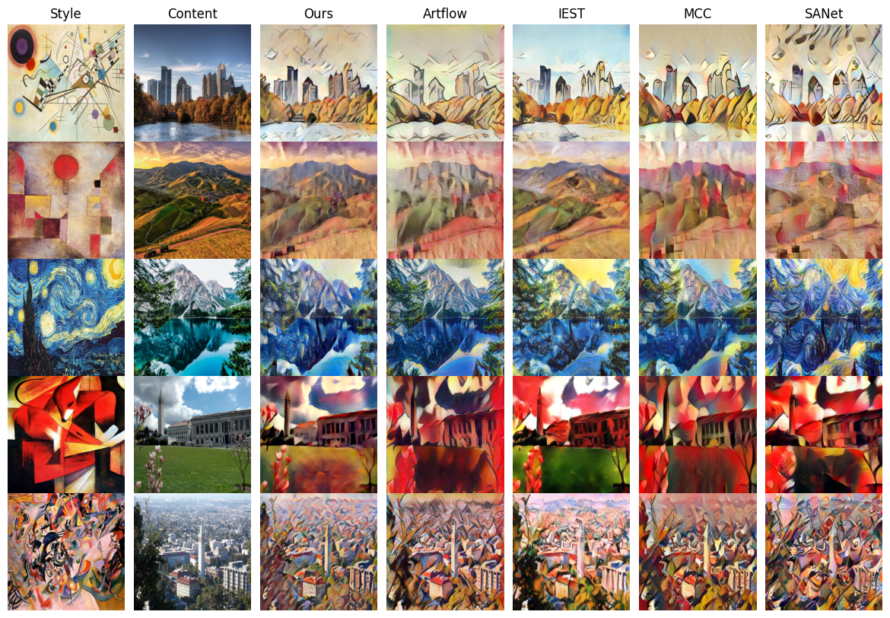
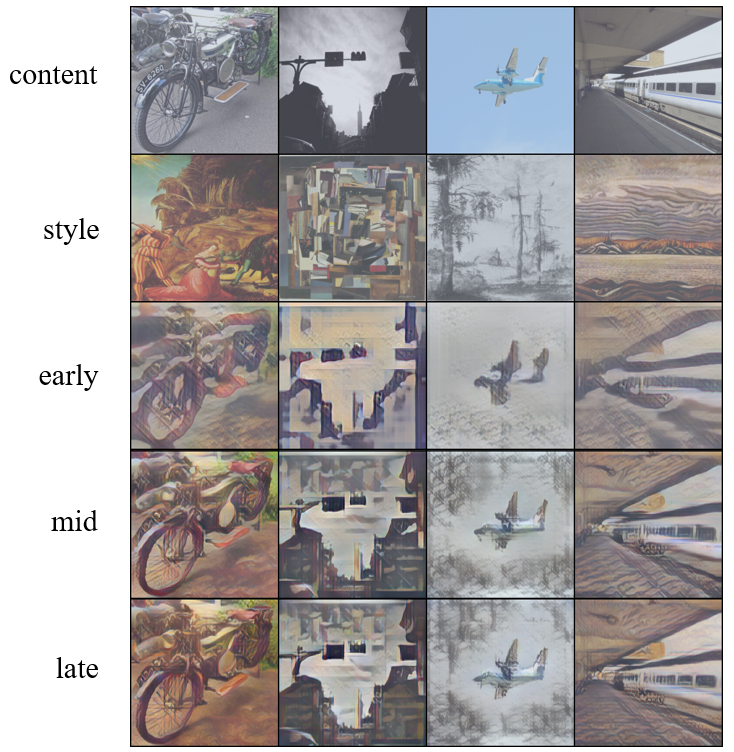
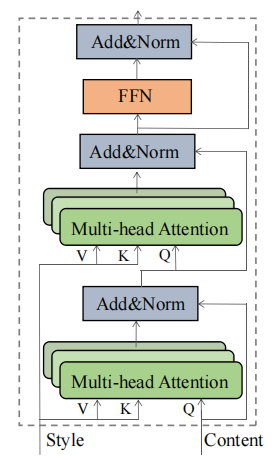
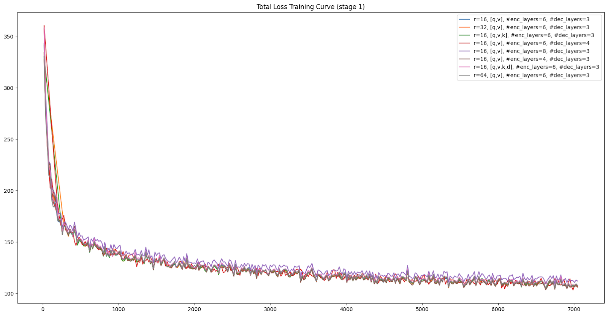
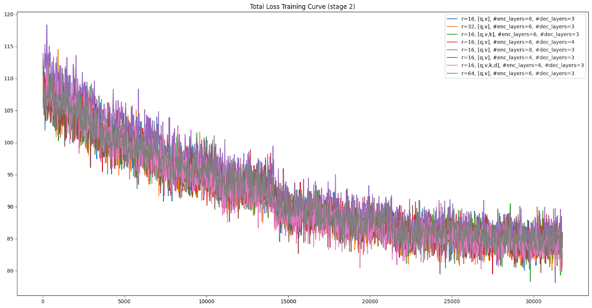

Background
Neural style transfer (NST) is a technique that blends the content of one image (named content image)
with the style of another image (named style image) using neural networks. The goal of the neural style
transfer algorithm is to take a content image and a style image, then produce a new image that retains the
content of the original image but has the artistic style of the style image.
As shown in papers, traditional CNNs methods cannot capture long-range dependencies owing to the limited
receptive field of convolution operation, while simply adopting single encoder-decoder transformer
architecture in NST tasks will face the issue of inability of fully capturing the content and the style of
images. In contrast, StyTr2 adopted two different transformer encoders to generate domain-specific
sequences for content and style respectively and a multi-layer transformer decoder to stylize the content
sequence according to the style sequence, acquiring better results than other transformer-based methods.
Inspired by StyTr2, we adopt the main architecture and replace the content and style encoders with the
pretrained ViT model. We propose a two-stage training strategy, where we first freeze the pretrained
encoders, and just train the decoder; then we wrap the encoders with LoRA and do joint training.
Our contributions
Our contributions are mainly four-fold:

Table 1: Test results comparison of our method and baselines

Figure 1: Generated images comparison of our method and baselines
- Better image quality: through the incorporation of pretrained models and LoRA, our model performs better than other baselines in terms of both content loss and style loss, with the style loss nearly half of the baselines.
- Less training computation: the two-stage training strategy reduces the required training computation significantly, only less than half of the training computation required by the original StyTr2 model.
- Comprehensive ablation study: we have tried different sets of hyperparameters to explore how LoRA and the pretrained model configuration affect the model performance.
Image Gallery

Figure 2: Images generated in the early, mid and late stages of training

Figure 3: Transformer decoder, borrowed from the original StyTr2 paper

Figure 4: Total loss training curve of training stage 1

Figure 5: Total loss training curve of training stage 2